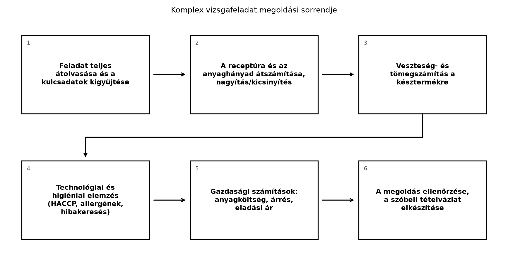

A cukrász szakmai vizsgán nem elég külön-külön tudni a receptúra-átszámítást, a HACCP-t vagy az árképzést. A vizsgafeladat egyszerre kérdezi ezeket, mert a műhelyben is együtt jelennek meg. Egy esküvői torta rendelésekor előbb átszámolod a receptet, utána ellenőrzöd a nyersanyagokat, közben figyelsz a hűtési láncra, a díszítés előtt kalkulálsz, és a végén a készterméket minőségi szempontból is átnézed. Ez az alfejezet egy teljes mintafeladatsort ad megoldókulccsal, hogy önállóan gyakorolhasd a vizsga előtt, és megtudd, melyik fejezetet kell még átismételned.
A komplex feladat nem önálló műfaj, hanem a cukrász napi munkájának modellje. Aki a feladatsort megoldja, az nemcsak a vizsgára, hanem a reggeli termelésre, a rendelésfelvételre és a hatósági ellenőrzésre is készül.
A gyakorló feladatsor nyolc feladatból áll, az A–D szintek fokozatos nehézséggel követik egymást: az 1–2. feladat az alapszámítás (receptúra-átszámítás, veszteség), a 3–5. feladat a szakmai számítás (fagylaltkeverék, tápérték, árképzés), a 6–8. feladat a higiéniai és technológiai alkalmazás (HACCP, hibakeresés, technológiai lap). A pontozás feladatonként: 1. feladat 10, 2. 10, 3. 15, 4. 15, 5. 10, 6. 15, 7. 10, 8. 15 pont, összesen 100 pont. Értékelési sáv (tanulási): 85–100 pont kiváló, 70–84 jó, 50–69 megfelelő, 50 pont alatt ismétlendő.
A vizsgán először ne számolni kezdj, hanem értelmezd a feladatot. Az alábbi folyamat a leggyakoribb hibákat előzi meg.

A diagram üzenete egyszerű: a számítási, a technológiai és a gazdasági részt nem szétválasztva, hanem egymásra építve kell megoldani. Ha például a veszteséget kihagyod, a tápérték- és árkalkuláció is rossz lesz.
Szabály. A vizsgafeladat megoldása során minden mennyiséget mértékegységgel együtt írj fel, a részeredményeket ellenőrizd, és a végén a késztermék tömegét vagy darabszámát hasonlítsd össze a kiindulási adatokkal.
Figyelem. A vizsgán nem szabad a hűtési láncot, a nyers tojás felhasználását vagy az allergén-jelölést olyan válasszal „megoldani”, amely a gyakorlatban fogyasztói kockázatot okozna. A higiéniai és élelmiszerbiztonsági követelmények a vizsgafeladatban is kötelezőek.
A gyakorlati vizsgafeladat mellett gyakran egy szóbeli tételt is húzol. A vázlat célja, hogy a felelet logikus, a vizsgabizottság által követhető legyen. Az alábbi minta a krémes és tejszínes sütemények témáját dolgozza fel.
Tétel címe: A krémes és tejszínes sütemények
technológiai és higiéniai követelményei
Vázlatpontok:
1. Termékcsoport meghatározása: krémesek forrázott és vajas/leveles
tésztából, tejszínes sütemények.
2. Nyersanyagok és szerepük: liszt, tojás, víz, vaj, tej, tejszín,
cukor, zselésítő.
3. A forrázott tészta készítésének technológiája és kritikus
pontjai.
4. A főzött sárgakrém (crème pâtissière) készítése, a csirízesedés és a
hőkezelés szerepe.
5. A tejszínkrém készítése, a habfelverés és az emulzió
stabilitása.
6. A termék összeállítása, adagolása, dermesztése.
7. Higiénia és HACCP: hűtési lánc, nyers tojás tilalma, allergének
(glutén, tojás, tej), keresztszennyeződés.
8. Minőségi jellemzők és tipikus hibák.
9. Tárolás, értékesítési idő, fogyasztói tájékoztatás.
Példa a kidolgozásra:
A forrázott tészta akkor lesz jó, ha a víz-zsiradék keverék forrásban
van, amikor a lisztet hozzáadjuk, mert így a keményítő megduzzad, a
tészta később a sütőben gőzzel lazul. A tojást fokozatosan, a tészta
hűlése közben adjuk hozzá, hogy a fehérje ne csapódjon ki. Ez a tészta
alapja a képviselőfánknak és a krémes tésztájának. A főzött sárgakrémet
85 °C körüli maghőmérsékletre melegítjük (tanulási érték,
ellenőrizendő), majd gyorsan lehűtjük, mert a
tojásos-tejes közeg kedvez a mikrobák szaporodásának. A tejszínkrémet
csak hűtött tejszínből, jól lehűtött eszközökkel verjük fel, és
felhasználásig hűtve tároljuk.
Továbbvitt eredmény. Ez a tételvázlat a Krémesek: vajas/leveles és forrázott tésztából, a Tejszínes sütemények és hagyományőrző tejszínes termékek és a Krémes és tejszínes sütemények anyaghányad-számítása és higiéniája alfejezetek anyagára épül; a vizsgán ezeket a technológiai lépéseket és a HACCP-elveket kell összekapcsolnod.
Az alábbi feladatsor egy 100 pontos írásbeli vizsgarész mintája. Minden feladatnál jelölöm a szintet (A: alap, B: közepes, C: gondolkodtató, D: gyakorlati). Oldd meg önállóan, majd ellenőrizd a megoldókulccsal.
Egy 24 cm átmérőjű, 12 szeletes piskótatorta receptje a következő:
| Nyersanyag | Mennyiség (g) |
|---|---|
| Tojás | 240 |
| Cukor | 120 |
| Liszt (finomliszt) | 120 |
| Vaj | 30 |
| Összesen | 510 |
Egy omlós linzerkarika nyers tészta tömege 10,0 g. Sütés közben a
tészta 12 %-os sütési veszteséget szenved.
a) Mennyi a kisült linzer tömege?
b) Hány darab linzer készül 1,25 kg nyers tésztából, és mennyi lesz a
késztermék össztömege?
c) Mennyi nyers tésztát kell készíteni, ha a megrendelő 8,80 kg kész
linzert kér?
Egy egyszerű vaníliafagylalt próbatételéhez az alábbi anyaghányadot használod:
| Nyersanyag | Mennyiség (g) | Zsír (%) | Cukor (%) | Zsírmentes tej-szárazanyag (%) | Egyéb szárazanyag (%) |
|---|---|---|---|---|---|
| Tej (3,6 % zsír) | 600 | 3,6 | 0 | 8,5 | 0 |
| Tejszín (35 % zsír) | 200 | 35,0 | 0 | 5,0 | 0 |
| Tejpor (sovány) | 40 | 1,0 | 0 | 95,0 | 0 |
| Cukor | 150 | 0 | 100 | 0 | 0 |
| Tojássárgája | 20 | 30,0 | 0 | 0 | 20,0 |
| Víz | 90 | 0 | 0 | 0 | 0 |
| Összesen | 1100 |
A 30 cm-es kész torta (a tészta az 1. feladat a) része, tömlőzött
vajkrémmel, tejszínnel és csokoládéval töltve és díszítve) összetétele
(tanulási adatok; ellenőrizendő: tápanyagtáblázat): a tészta 66,0 g
fehérjét, 76,0 g zsírt (ebből telített 38,0 g), 325,0 g szénhidrátot
(ebből cukrok 190,0 g) és 6,0 g rostot tartalmaz. A töltelék és a
díszítés további 30,0 g fehérjét, 270,0 g zsírt (ebből telített 160,0
g), 200,0 g szénhidrátot (ebből cukrok 180,0 g), 8,0 g rostot és az
egész tortában összesen 1,5 g sót ad. A teljes kész torta tömege 1600
g.
a) Számítsd ki a kész torta energia- és tápanyagtartalmát 100 g-ra
vetítve (kJ-ban és kcal-ban).
b) Készítsd el a kötelező tápértékjelölés 100 g-ra vonatkozó táblázatát
(energia, zsír, ebből telített zsírsavak, szénhidrát, ebből cukrok,
fehérje, só; a rost önkéntes). Megjegyzés: a kötelező jelölés és az
esetleges mentesség feltételei az 1169/2011/EU rendelet szerint
(ellenőrizendő; a kézműves, kis mennyiségben közvetlenül a fogyasztónak
értékesített termékre mentesség vonatkozhat).
c) Állapítsd meg, melyik 14 jelölendő allergéncsoport fordul elő a
termékben, ha a tészta búzalisztet, tojást, tejet és vajat tartalmaz, a
töltelék tejszínt és étcsokoládét (szójalecitint), a díszítés
mandulát.
A fenti piskótatorta 30 cm-es változatának teljes anyagköltsége 2450
Ft (ÁFA nélkül). Az üzlet a tortára 120 %-os haszonkulcsot alkalmaz, az
ÁFA-kulcs 27 %.
a) Mennyi a torta nettó eladási ára?
b) Mennyi az ÁFA összege és a bruttó eladási ár?
c) Ha az üzlet 10 % kedvezményt ad a bruttó árból, mennyi lesz a
kedvezményes ár? (Kerekíts 100 Ft-ra.)
Egy cukrászüzemben főzött sárgakrémmel töltött képviselőfánkot
készítenek. A töltelék hőkezelése 85 °C maghőmérsékletig történik
(tanulási érték, ellenőrizendő), majd a krémet a
hőkezelés végétől számított 2 órán belül 5 °C alá hűtik (tanulási érték,
ellenőrizendő).
a) Nevezd meg a folyamat két kritikus szabályozási pontját (CCP)!
b) Írd le mindkét CCP-nél a kritikus határértéket, a monitorozás módját,
a helyesbítő tevékenységet és a dokumentumot.
c) Milyen helyesbítő tevékenység szükséges, ha a hűtőkamra hőmérséklete
12 °C-ra emelkedik?
Egy tanuló piskótát süt. A tészta a sütőben szépen feljön, majd
kivétel után összeesik. A tortalap tömör, a teteje ragacsos.
a) Nevezz meg legalább három lehetséges okot!
b) Mindegyik oknál fogalmazz meg egy javító vagy megelőző
intézkedést!
c) Melyik alfejezetben találod a piskótatészta hibáinak rendszeres
leírását? (A kereszthivatkozásokat lásd a megoldókulcsban.)
Készíts technológiai lapot a fenti 30 cm-es piskótatortához a Cukrászati termékcsoportok, megnevezések és a
technológiai lap alfejezetben tanult séma szerint. A lap
tartalmazza:
- termék nevét, csoportját, alapmennyiségét,
- anyaghányad-táblázatot az 1. feladat a) részében kapott
tömegekkel,
- a műveleti sorrendet (hideg úton készült könnyű felvert),
- kritikus pontokat és allergéneket,
- minőségi jellemzőket, tárolást.
Az Önellenőrzés kérdései a fejezet végén találhatók, a válaszok
itt:
1. A komplex vizsgafeladat a cukrász napi munkáját modellezi.
(Igaz)
2. A veszteség kihagyása csak a tápértékjelölést rontja el. (Hamis – az
árat, a késztermék tömegét és a kalkulációt is rossz irányba
viszi.)
3. A nyers tojásból készült krém a vizsgafeladatban is csak pasztőrözött
tojástermékkel vagy hőkezelt változattal fogadható el. (Igaz)
4. A HACCP-ben a kritikus pontok száma mindig kettő. (Hamis – a CCP-k a
folyamattól függenek.)
5. Az allergénmátrixban a „nyomokban tartalmazhat” jelölés mentesít az
allergénkezelés alól. (Hamis – az allergénkereszt-szennyeződést meg kell
előzni, és a jelölés csak kiegészítő tájékoztatás, nem helyettesíti a
GHP-t.)
Megoldás.
A nyersanyagok tömegeit ezzel a szorzóval növeljük:
A kerekítések miatt az összes tömeg 795,6 g, amit a gyakorlatban 800 g-ra kerekíthetünk. A 30 cm-es tortához tehát 374 g tojás, 187 g cukor, 187 g liszt és 47 g vaj kell.
A 30 cm-es torta 18 szeletre vágható.
Ellenőrzés. A 24 cm-es tortánál 510 g tészta 12 szelet, egy szelet 42,5 g. A 30 cm-esnél 795,6 g tészta 18 szelet: , ami nagyjából egyezik (a kerekítési eltérés elfogadható).
Megoldás.
Egy kisült linzer tömege 8,8 g.
A 125 db kisült linzer össztömege 1,10 kg.
10,00 kg nyers tésztát kell készíteni.
Összefüggés. A veszteség esetén a bruttó (nyers) tömegből a nettó (kész) tömeget a képlettel számítjuk. Ha a kész tömeget ismerjük, akkor .
Megoldás.
| Nyersanyag | Mennyiség (g) | Zsír (g) | Cukor (g) | Zsírmentes tej-szárazanyag (g) | Egyéb szárazanyag (g) |
|---|---|---|---|---|---|
| Tej | 600 | 600·0,036 = 21,6 | 0 | 600·0,085 = 51,0 | 0 |
| Tejszín | 200 | 200·0,35 = 70,0 | 0 | 200·0,05 = 10,0 | 0 |
| Tejpor (sovány) | 40 | 40·0,01 = 0,4 | 0 | 40·0,95 = 38,0 | 0 |
| Cukor | 150 | 0 | 150·1,00 = 150,0 | 0 | 0 |
| Tojássárgája | 20 | 20·0,30 = 6,0 | 0 | 0 | 20·0,20 = 4,0 |
| Víz | 90 | 0 | 0 | 0 | 0 |
| Összesen | 1100 | 98,0 | 150,0 | 99,0 | 4,0 |
A keverék szárazanyag-tartalma 31,9 tömeg%, ami a tejfagylaltok 32–38 %-os céltartományához közel van (tanulási érték, ellenőrizendő).
Szorozzuk be mindkét oldalt a nevezővel:
48,0 g tejszínt kell hozzáadni. Az új keveréktömeg:
Ellenőrzés: az új zsírtömeg , a zsírtartalom .
Továbbvitt eredmény. Ezt a komponensmátrix-számítást a Fagylaltkeverék-számítás: szárazanyag, cukor, zsír, édesség és fagyáspont alfejezetben tanultad; a vizsgafeladatban a korrekciós lépés a POD és PAC figyelmen kívül hagyásával is a zsírszint beállítására irányul.
Megoldás.
Az energia számítása az átváltási tényezőkkel:
A kcal-érték: .
A 100 g-ra vonatkoztatott értékek: a teljes torta tömege 1600 g, ezért 100 g-ra (a szorzó ):
| Tápanyag | 100 g termékben |
|---|---|
| Energia | 1467 kJ / 351 kcal |
| Zsír | 21,6 g |
| ebből telített zsírsavak | 12,4 g |
| Szénhidrát | 32,8 g |
| ebből cukrok | 23,1 g |
| Fehérje | 6,0 g |
| Só | 0,1 g |
A rost önkéntes jelölés (0,9 g/100 g). A kötelező hét sor és az esetleges mentesség feltételei: 1169/2011/EU (ellenőrizendő).
A termék tehát öt allergéncsoportot tartalmaz: glutén, tojás, tej, szója, diófélék.
Jogszabály. Az 1169/2011/EU rendelet írta elő a tápértékjelölés kötelező mezőit és az allergéncsoportok kiemelését. Az átváltási tényezők a rendelet mellékletében szerepelnek (ellenőrizendő: aktuális melléklet).
Megoldás.
A nettó eladási ár:
A bruttó eladási ár:
Megjegyzés. Az ÁFA-kulcs, a haszonkulcs és a kerekítési szabály az üzleti gyakorlat és a hatályos jogszabály szerint változhat; a vizsgán a feladatban megadott értékeket kell használni.
Megoldás.
| Lépés | Veszély | Megelőzés | Kritikus határ (tanulási) | Monitorozás | Helyesbítő tevékenység | Dokumentum |
|---|---|---|---|---|---|---|
| Hőkezelés | Mikrobák túlélése tojásos-tejes krémben | A krémet folyamatosan keverve melegítjük | Maghőmérséklet ≥ 85 °C (ellenőrizendő) | Maghőmérővel mérni minden tételnél | Tovább melegítés a kritikus hőfokig | Hőkezelési napló, CCP-feljegyzés |
| Gyors hűtés és hűtött tárolás | Spóraformáló baktériumok szaporodása, toxinok képződése | A krémet sekély edényben, jégvízfürdőben vagy sokkolóban hűtjük | 5 °C alá ≤ 2 óra a hőkezelés végétől (tanulási érték, ellenőrizendő: NÉBIH-útmutató) | Idő- és hőmérsékletmérés | Ha a krém 2 óra alatt nem éri el az 5 °C-ot: a tétel zárolása és selejtezése (nem újrahűthető), a hűtési módszer (sekély edény, sokkoló) és a berendezés felülvizsgálata, dokumentálás | Hűtési napló, CCP-feljegyzés |
Jogszabály. A HACCP-alapú eljárást a 852/2004/EK rendelet írja elő a vendéglátásra is. A konkrét hőmérsékleti és időhatárokat a GHP-útmutatók tartalmazzák, ezért azokat mindig az aktuális NÉBIH-útmutató vagy a gyártói adatlap szerint kell alkalmazni (ellenőrizendő).
Megoldás.
Hiba. A hiba-elemzés mintája: ha a piskóta ragacsos, az ok lehet a túl sok cukor vagy a nem megfelelő sütési idő. A javítás mindig a recept és a hőkezelés ellenőrzésével kezdődik.
Technológiai lap.
| Nyersanyag | Mennyiség (g) | Megjegyzés |
|---|---|---|
| Tojás | 374 | egész tojás, szoba-hőmérsékletű |
| Cukor | 187 | kristálycukor |
| Finomliszt | 187 | átszitálva |
| Vaj | 47 | olvasztott, kihűtve |
| Összesen | 795 | nyers piskóta tészta |
Allergének. A 14 jelölendő allergén közül a termékben a glutén (búzaliszt), a tojás és a tej (vaj) van jelen. A későbbi töltelék és díszítés további allergéneket adhat.
Tünet: a receptúra-átszámításnál a tanuló az
átmérővel, nem a területtel arányosít.
Ok: a felületarány elfelejtése.
Megelőzés/javítás: mindig írjuk fel a
vagy
képletet.
Tünet: a veszteségszámításnál a kész tömegből a
veszteséggel osztás helyett szoroz.
Ok: az alapképlet
elvesztése.
Megelőzés/javítás: ellenőrizzük, hogy a kész tömeg
kisebb legyen, mint a nyers; a visszaszámításnál osztani kell.
Tünet: a tápérték-számításban az
energiaértékeket a késztermék tömegére vetítés nélkül adják meg.
Ok: a sütési veszteség koncentráció-növelő hatását
figyelmen kívül hagyják.
Megelőzés/javítás: a tápanyag-mennyiségeket mindig a
késztermék tömegére kell vonatkoztatni.
Tünet: a HACCP-feladatban a hűtési lánc
megszakadását elfogadható gyakorlatként írják le.
Ok: a kritikus határértékek és a helyesbítő tevékenység
pontos ismeretének hiánya.
Megelőzés/javítás: a hatályos GHP-útmutatók
hőmérséklet- és időadatait kell megtanulni, a vizsgán pedig a megadott
tanulási értékeket használni.
Tünet: az árképzésnél az ÁFA-t az
anyagköltségből számítják, nem a nettó eladási árból.
Ok: az adóalap tévesztése.
Megelőzés/javítás: az ÁFA alapja mindig a nettó ár,
azaz az anyagköltség + árrés.
Egy cukrászdában a tanuló megkapja a napi termelési tervet: 30 db 24 cm-es Dobos tortát kell készíteni. A vizsgán megtanult szorzószámos átszámítással először az egy tortára vonatkozó receptet 30-ra nagyítja. Közben észreveszi, hogy a tojás mennyisége túl nagy a rendelkezésre álló készlethez, ezért az üzletvezetővel egyeztet, és részben pasztőrözött tojásterméket használ. A HACCP-lapon rögzíti a főzött tojáskrém hőkezelését, a hűtési időt és a hűtőkamra hőmérsékletét. A torták anyagköltségéből kalkulál, és a nap végén minőségi ellenőrzést végez. Ez a valós feladat pontosan az, amit a komplex vizsgafeladat modellez. Aki a vizsgán hibázik, az a műhelyben is hibázna; aki a vizsgán ellenőriz, az a gyakorlatban is elkerüli a selejtet.
Válaszolj röviden, majd ellenőrizd a Megoldások elején.
1. Igaz vagy hamis: a komplex vizsgafeladat a cukrász napi munkáját
modellezi.
2. Igaz vagy hamis: a veszteség kihagyása csak a tápértékjelölést rontja
el.
3. Igaz vagy hamis: a nyers tojásból készült krém a vizsgafeladatban is
csak pasztőrözött tojástermékkel vagy hőkezelt változattal fogadható
el.
4. Igaz vagy hamis: a HACCP-ben a kritikus pontok száma mindig
kettő.
5. Igaz vagy hamis: az allergénmátrixban a „nyomokban tartalmazhat”
jelölés mentesít az allergénkezelés alól.
A fenti komplett mintafeladatsor (1–8. feladat) önálló elvégzése az elsődleges gyakorlat. Ezen felül az alábbi kiegészítő feladatokkal mélyítheted a tudásod:
1. feladat (A) – Definiáld röviden: mi a kritikus
szabályozási pont (CCP)?
2. feladat (A) – Írd fel a veszteség-számítás két
alapképletét (nyersből készre, készből nyersre).
3. feladat (B) – Egy 16 cm-es kerek tortaformára szóló
recept 200 g lisztet ír elő. Mennyi liszt kell egy 24 cm-es
formához?
4. feladat (B) – Egy fagylaltkeverék 1000 g-os
tételében 80 g zsír van. Hány gramm 35 %-os tejszínt kell hozzáadni
ahhoz, hogy a végső zsírtartalom 10 % legyen?
5. feladat (C) – Egy teasütemény 100 g-jában 5,0 g
fehérje, 25,0 g zsír, 60,0 g szénhidrát és 2,0 g rost van. Számítsd ki
az energiaértékét kJ-ban és kcal-ban.
6. feladat (D) – Készíts egy HACCP-folyamatábrát a
főzött sárgakrémes képviselőfánk készítéséhez, jelöld a CCP-ket.
1. feladat. A CCP az a lépés, ahol a veszély megelőzése vagy elfogadható szintre csökkentése érdekében szabályozás szükséges, és a határérték mérhető, monitorozható.
2. feladat. és .
3. feladat. A területarány: . A szükséges liszt: .
4. feladat. A jelenlegi zsírtömeg 80 g, a keverék tömege 1000 g. Legyen a hozzáadott tejszín (gramm). A zsírtartalom 10 % legyen:
Ellenőrzés: . A tanulság: mindig számold ki a jelenlegi koncentrációt, mielőtt korrekciót írnál elő; 12 %-os zsírtartalmú keveréket például 35 %-os tejszínnel nem lehet 10 %-ra beállítani, mert a tejszín zsírtartalma magasabb, mint a célérték, vagyis a keveréket hígítani kellene.
5. feladat. . Kcal-ban: .
6. feladat. A folyamatábra lépései: nyersanyagok átvétele → tárolás → mérés → forrázott tészta készítése → sütés → hűtés → főzött sárgakrém készítése (CCP: hőkezelés) → krém gyors hűtése (CCP: hűtés) → töltés → dermesztés → csomagolás, jelölés → hűtött tárolás. A CCP-k a hőkezelésnél és a gyors hűtésnél vannak.
A komplex gyakorló vizsgafeladat a cukrász szakmai vizsga írásbeli és gyakorlati részét egyben modellezi. Megoldása során a vizsgázó átszámítja a receptúrát, kiszámítja a sütési veszteséget, a fagylaltkeverék összetételét, a tápértéket, az árat, valamint HACCP- és allergén-elemzést készít. Minden számítási lépésben a képletet, a behelyettesítést és az ellenőrzést is rögzíteni kell. A technológiai lap a termék anyaghányadát, műveleti sorrendjét, kritikus pontjait, allergénjeit, minőségi jellemzőit és tárolását tartalmazza. A vizsgán a nyers tojás, a hűtési lánc megszakítása, a kiolvadt fagylalt visszafagyasztása és az allergénkereszt-szennyezés tilos megoldások. A szóbeli tételvázlat a technológiai és higiéniai összefüggéseket mutatja be. Aki a mintafeladatsort megoldja, az a Fagylaltkeverék-számítás: szárazanyag, cukor, zsír, édesség és fagyáspont, a Tápérték- és energiaszámítás receptúrából, allergénmátrix, az Árképzés: anyagköltség, árrés, haszonkulcs, ÁFA, a Termékkalkuláció a cukrászatban: önköltség és eladási ár és a HACCP a cukrászatban: CCP-k, hőmérsékletnapló és helyesbítő tevékenység alfejezetek tudását gyakorolja; a hibák visszavezetnek a megfelelő fejezetre. Ez az alfejezet a vizsgafelkészülés záró lépése, és egyben a gyakorlati munka teljes körű modellje.